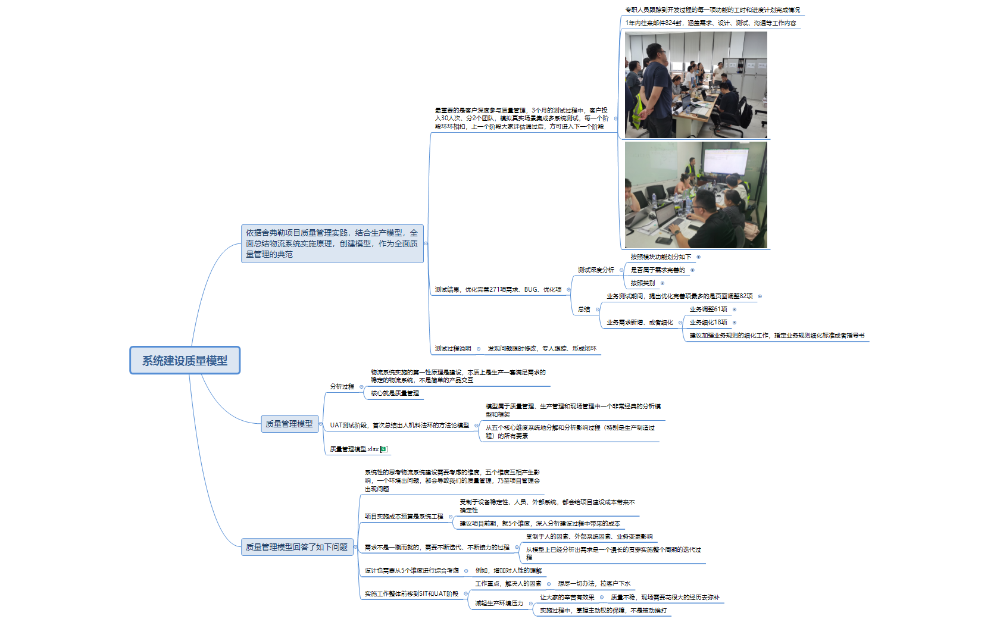
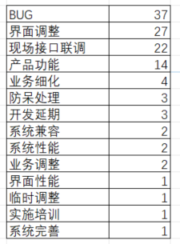
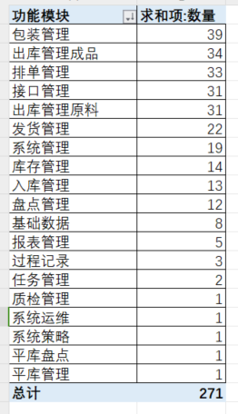
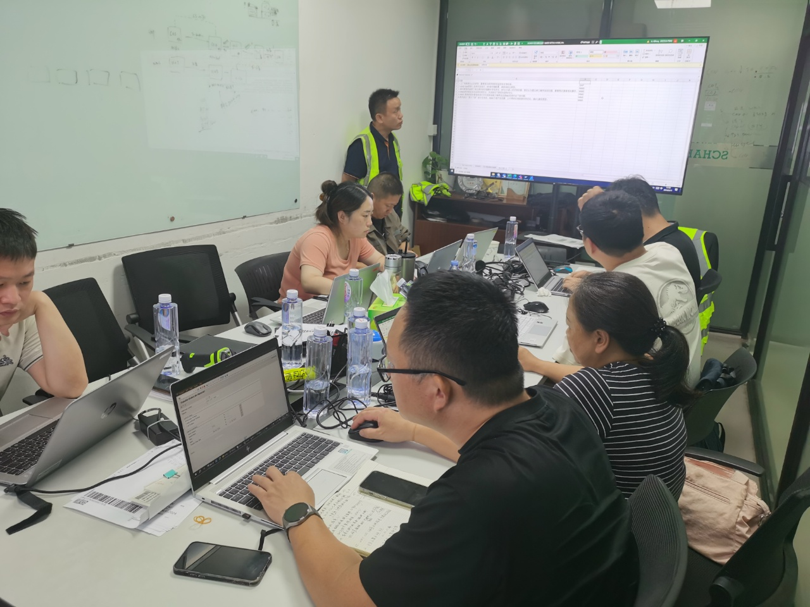
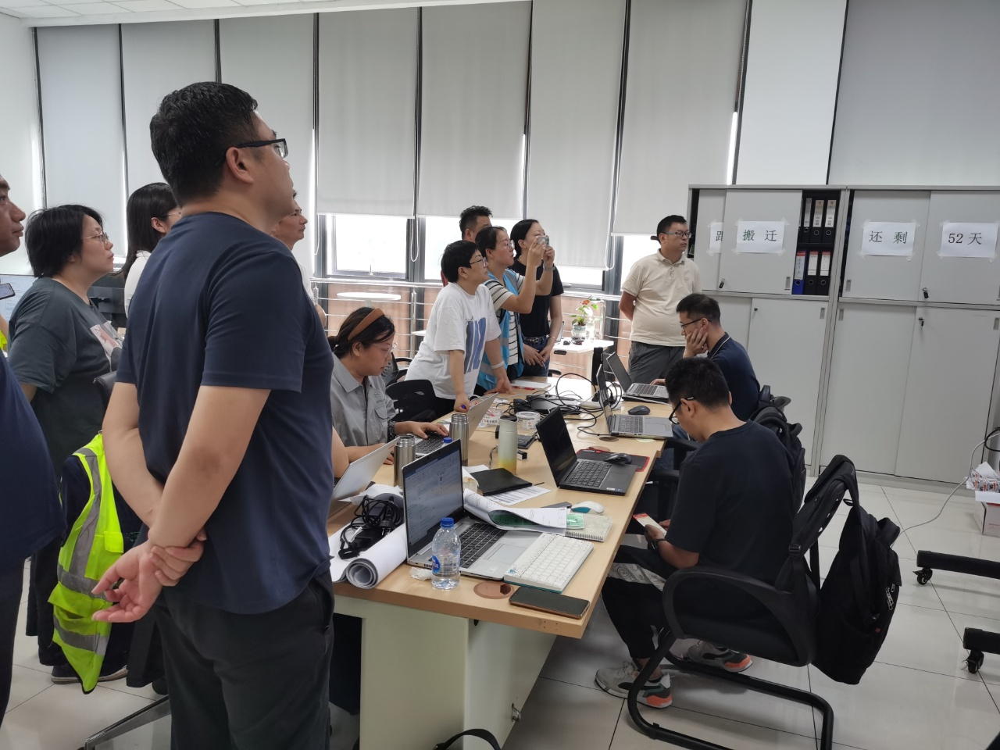

系统建设质量模型 · 舍弗勒实践 · 人机料法环 · 整理日期：2026年07月

本模型依据舍弗勒项目质量管理实践，结合生产管理思想，全面总结物流系统实施原理，创建可复用的质量管理框架，作为全面质量管理的典范。
核心思路：物流系统建设不是简单的产品交互，而是生产一套满足需求、稳定运行的物流系统；贯穿始终的是质量管理，而非事后补救。
第一性原理：建设，本质上是生产一套满足需求的稳定物流系统；核心就是质量管理。—— 模型分析过程
舍弗勒项目是这套模型的实践样板。最重要的经验是客户深度参与质量管理：3 个月测试期间，客户投入 30 人次、分 2 个团队，模拟真实场景集成多系统测试；每个阶段环环相扣，上一阶段评估通过后方可进入下一阶段。
过程管理
271 项测试优化分析
测试期间共优化完善 271 项需求、BUG 与优化项，主要集中在出库管理、包装管理、发货管理、接口调试等方面。
| 分类 | 数量 | 说明 |
|---|---|---|
| 需求完善 | 151 | 需求调研阶段应更充分 |
| 其它类 | 120 | — |
| 页面调整 | 82 | 最多；建议强化界面设计与原型标准 |
| 业务调整 | 61 | 含 WSO、RO、特殊订单、IQC 等新增 |
| 业务细化 | 18 | 盘点功能完善、异常处理等 |
经验总结
在 UAT 测试阶段，首次系统总结出「人机料法环」方法论模型。该模型属于质量管理、生产管理和现场管理中非常经典的分析框架，从五个核心维度系统地分解影响物流系统建设过程的所有要素。



下表摘自《物流仓储系统建设质量管理模型》，按人、机、料、法、环五个维度，列出各要素在需求调研、设计开发、测试、实施四个阶段的落地要点。
| 元素 | 说明 | 需求调研 | 设计开发 | 测试 | 实施 |
|---|---|---|---|---|---|
| 数字画像 | 身份属性、技能标签、教育背景、培训记录、性格、工作习惯、沟通协作、可塑性 | 按画像维度收集并整理项目干系人信息 | 界面设计符合数字画像需求 | 协调人员进行功能验证、集成测试、UAT、压力测试 | 作为实施的沟通依据 |
| 岗位设置 | 系统运行中设置的岗位名称 | 梳理岗位职责，匹配系统功能 | 针对不同岗位进行界面和权限设计考量 | 每个岗位都需参与测试，配置角色 | — |
| 岗位人员配置 | 每个岗位的任务配置数量 | 梳理每个岗位的人员配备 | 考虑系统操作的防呆措施和性能设计要求 | 抽调人员参与测试，配置用户 | — |
| 岗位人员稳定性 | 各岗位人员是否稳定 | 按岗位梳理，关键运维岗位建议稳定 | 人机界面友好 | 关键人员全程参与 | 作为实施的沟通依据 |
| 物流系统使用经验 | 是否具备物流软件应用系统的使用经验 | 调研完成 | — | 参与测试 | 作为实施的沟通依据 |
| 物流系统使用习惯 | 对已有物流系统是否有固定的操作习惯 | 调研输出具体页面的操作习惯 | 特别注意移动端界面的便捷性和防呆措施 | 参与测试，引导测试 | 作为实施的沟通依据 |
| 物流业务经验 | 是否能够清晰表达业务需求 | 业务调研确认 | 无业务经验时，按现有逻辑引导 | 按测试用例逐项验证 | 作为实施的沟通依据 |
| 团队协作 | 团队协作方式、沟通方式 | 业务调研时确认 | 考虑团队协作方式对设计的影响 | 用于测试的沟通基础 | — |
| 元素 | 说明 | 需求调研 | 设计开发 | 测试 | 实施 |
|---|---|---|---|---|---|
| 外部系统集成 | 外部系统接口方案 | 接口协议 | 接口性能、防呆处理、异常处理方案，制定集成测试用例 | 重点进行接口集成测试、UAT 和压力测试 | 培训接口异常处理方案，收集并界定新需求 |
| 物流设备集成 | 设备空间布局、通信方案和性能指标、设备调度方案 | 设备参数、性能指标、效率方案 | 通信协议、防呆处理、异常处理方案，制定设备集成测试用例 | 设备集成测试、UAT 和压力测试 | 培训异常情况，收集防呆处理措施 |
| 物流设备稳定性 | 通信稳定，是否首次集成、是否首家供应商 | 输出供应商数字画像 | 考虑设备不稳定情况下的调度方案，制定异常测试用例 | 集成测试阶段完成测试 | 收集设备稳定性带来的系统优化完善 |
| 服务器设备 | 服务器型号、配置参数 | 明确服务器配置，配置测试服务器 | 做适配 | 配置测试服务器，建议与正式环境配置类似 | 监控正式环境服务器性能 |
| 网络设备 | 交换机型号、配置参数 | 明确 | — | 现场正式网络环境 | 监控网络设备运行状况 |
| 电脑终端 | 电脑终端型号、配置参数 | — | — | 建议正式终端 | 安装终端设备 |
| 移动终端 | 移动终端型号、配置参数 | — | 根据选型做适配 | 正式移动终端 | 培训移动终端的日常维护 |
| 显示终端 | 显示终端型号、配置参数、通信接口、性能参数 | — | — | 正式设备 | 培训日常运维 |
| 打印终端 | 打印终端型号、配置参数、通信接口、性能参数 | 明确，建议标准化设备 | — | — | 培训日常运维 |
| 元素 | 说明 | 需求调研 | 设计开发 | 测试 | 实施 |
|---|---|---|---|---|---|
| 实体物料 | 仓库管理的各类实物物料 | 拍照记录 | — | UAT 测试阶段需要实体物料参与 | 跟踪运行 |
| 物料数据 | 编码、物料属性 | 整理物料库存管理属性维度，需求规格说明书 | 依据属性维度和基础版本选择最合适的设计方案 | 依据测试用例，各测试阶段适用 | 跟踪新的物料导入情况 |
| 显示载体 | 标签样式、模版、标签编码构成 | 整理标签需求方案，需求规格说明书 | 考虑标签具体要求，对标产品基本功能设计 | 测试打印效果和打印性能 | 跟踪标签日常打印情况 |
| 容器载体 | 类别、容器属性 | 明确 | 明确多规格容器的设计方案 | 各测试阶段均需要覆盖 | 跟踪日常运行 |
| 元素 | 说明 | 需求调研 | 设计开发 | 测试 | 实施 |
|---|---|---|---|---|---|
| 物流业务流程 | 仓库管理的整个作业过程 | 写入需求规格书 | 设计测试用例，与用户确认 | 依据测试用例组织人员调试测试 | 跟踪日常运行，收集新需求 |
| 仓库业务动线规划 | 仓库出入库作业动线、设备规划设计方案 | 技术协议 | 依据动线方案设计项目物流流程 | UAT 阶段用实物进行测试 | 跟踪日常运行，收集新需求 |
| 物流效率设计方案 | 单机设备效率指标、整体系统调度方案 | — | 设计物流效率初步方案，效率测试用例 | 通过人工方式设计模拟效率测试方案，测试系统极限效率 | 跟踪运行，完善效率优化方案，自动化完成效率测试 |
| 信息系统集成方案 | 各集成系统信息流转方案 | 需求规格说明书 | 接口测试用例，与用户确认 | 依据测试用例进行集成测试和 UAT 测试 | 跟踪日常运行，收集新需求 |
| 业务功能需求用例 | 物流仓储系统内部各功能用例描述 | — | 功能测试用例和实现方案，与用户确认完善 | 组织人员进行测试，测试阶段会产生新需求 | 跟踪日常运行，收集新需求 |
| 业务界面原型 | 核心操作界面、点击率高的界面原型 | 原型规则说明 | 界面原型设计 | 组织用户进行界面操作测试，完善界面设计 | 跟踪日常运行，收集新需求 |
| 业务功能规则 | 每个功能点的业务规则方案 | 需求规格说明书 | 对标产品，设计出最小差异化定制方案 | 组织人员进行测试 | 跟踪日常运行，收集新需求 |
| 应用系统安全规则 | 安全规范 | — | 满足安全规范要求 | 组织进行安全规范检测 | 跟踪日常运行 |
| 系统性能设计要求 | 系统稳定性和性能需求方案 | — | 从数据库索引、缓存、异步、分页等方面综合考虑 | 压力测试阶段，依据测试用例进行 | 跟踪日常运行，收集新需求 |
| 非功能性需求 | 系统主题色等 | — | 配置 | 覆盖测试 | 跟踪日常运行 |
| 元素 | 说明 | 需求调研 | 设计开发 | 测试 | 实施 |
|---|---|---|---|---|---|
| 操作系统环境 | 操作系统选型 | 需求规格说明书明确部署方案 | 操作系统环境做适配 | 测试环境和正式环境操作系统版本一致 | 跟踪日常运行 |
| 数据库环境 | 数据库选型 | — | 数据库环境做适配 | 测试环境和正式环境数据库系统版本及配置一致 | 跟踪日常运行 |
| IP 地址管理 | IP 地址分配方案、管理细则 | — | — | 专门分配测试环境 IP 地址 | 跟踪日常运行 |
| 防火墙 | 防火墙的选型 | — | — | 测试环境的防火墙需要和正式环境一致 | 跟踪日常运行 |
| 网络速度 | 规划的网速和实际网速 | — | 设计时注意网速带来的影响 | 测试环境的网速需要和正式环境一致，网速慢测试 | 跟踪日常运行 |
| 网络稳定性 | 网络稳定性方案 | — | — | 测试环境的稳定性需要和正式环境一致，断网测试 | 跟踪日常运行 |

【1. 系统性思考】
物流系统建设需要从五个维度系统性思考，五个维度互相产生影响。一个维度出问题，都会导致质量管理乃至项目管理出现问题。
【2. 项目成本是系统工程】
项目实施成本预算是系统工程，受制于设备稳定性、人员、外部系统，都会给项目建设成本带来不确定性。建议项目前期就五个维度深入分析建设过程中带来的成本。
【3. 需求是持续迭代的过程】
需求不是一蹴而就的，需要不断迭代、不断接力。受制于人的因素、外部系统因素、业务变更影响，需求是一个漫长的、贯穿实施整个周期的迭代过程。
【4. 设计需五维度综合考虑】
设计也需要从五个维度进行综合考虑，例如增加对人性的理解——界面设计要符合数字画像，移动端要考虑操作习惯和防呆措施。
【5. 实施工作前移到 SIT/UAT】
实施工作的重点应前移到 SIT 和 UAT 阶段：
这套模型的价值，在于把「做项目」从功能清单交付，升级为全要素质量工程。舍弗勒项目的 271 项优化数据说明：页面调整（82 项）和业务规则细化（61+18 项）如果在需求和设计阶段前置，成本会低得多。
人机料法环不是 paperwork，而是检查清单 + 共同语言：让项目经理、开发、测试、客户、设备方在同一框架下讨论「还缺哪一环」。尤其值得记住三点：① 客户深度参与比事后改需求便宜；② 接近生产的 SIT/UAT 比上线后救火便宜；③ 业务规则与界面原型前置，比测试阶段改页面便宜。
质量做好了，交付、产品化与销售自然水到渠成。